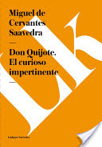
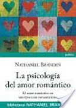

VIDEOS
MÚSICA
LIBROS
Preguntas y respuestas: Todo lo que siempre has querido saber
¿Por qué nos mareamos en el asiento de atrás del coche? ¿Cuál fue la primera ciudad que alcanzó un millón de habitantes? ¿Cómo hubieran expelido fuego los dragones? Descubre todo esto y muchas cosas más en esta recopilación de preguntas y respuestas
Mi insecto interesante
La historia de este libro relata el encuentro de Morena con un insecto bastante extraño, que le resulta muy interesante y del cual no va a separarse en los próximos días.
Don Quijote. El curioso impertinente
Considered a novel (in this case a short novel within the novel Don Quijote de la Mancha), Cervantes applies his baroque but clear and full of prose to tell Anselmo's tale of proving his faithfulness to his wife Camila. The plot begins in medias res, as much that has occured isn't explained, captivating the reader from the outset.
Novelas y cuentos 1: Edición al cuidado de César Aira
El material fue compilado y transcripto por César Aira y es uno de los aportes más valiosos a la narrativa argentina reciente.
El origen de la tristeza
"El origen de la tristeza" es el mapa moral de un paisaje tallado a golpes de realidad inclemente, de un territorio severamente humano que adquiere (por ello) dimensiones míticas. Y es también la estampa de un recuerdo que Pablo Ramos logra dibujar con tres lápices bien afilados: la escritura exacta, el humor inmisericorde y la mirada piadosa.
La motivación empieza en uno mismo: Aspectos básicos para motivar a los demás y motivarse a sí mismo
Este es un libro que trata de servir de guía a todas las personas que ejercen la función directiva para conocer y profundizar en aspectos tan importantes como son: qué es la motivación, para qué motivar, a quién motivar, que relación hay entre motivación y dinero, la desmotivación y cómo motivar a los demás y motivarse a sí mismo.
La psicología del amor romántico: El amor romántico en época sin romanticismo
La psicología del amor romántico explora la naturaleza del amor romántico a muchos niveles: filosófico, histórico, sociológico y fisiológico. Nathaniel Branden explica por qué tantas personas afirman que el amor romántico no es posible en el mundo actual.
Historias de amor
De los más de mil relatos cortos escritos por Robert Walser unos cien versan sobre el amor. Volker Michels, germanista y autor del epílogo que acompaña esta edición, seleccionó en 1978 ochenta y los ordenó cronológicamente. Estos relatos demuestran la gran variedad del registro expresivo de Robert Walser y dan fe de la evolución de un autor que tenía un concepto poco convencional del amor y del erotismo.
Romeo y Julieta (ilustrado)
Romeo y Julieta es una tragedia de William Shakespeare. Cuenta la historia de dos jóvenes enamorados que, a pesar de la oposición de sus familias, rivales entre sí, deciden casarse de forma clandestina y vivir juntos; sin embargo, la presión de esa rivalidad y una serie de fatalidades conducen a que la pareja elija el suicidio antes que vivir separados.
Ponte Una Flor En El Pelo Y Se Feliz: El Dolor Es Inevitable, Pero El Sentirse Miserable Es Opcional
Life isn't always what you want, but it's what you've got, so stick a geranium in your hat and be happy! Humorist Barbara Johnson has healing words for people who carry pain and guilt..
Decidi Ser Feliz
Este libro tiene el propsito básico de relatar vivencias reales, en un nivel espiritual basada en una serie de pensamientos que nacen del alma, de la vida misma,
¿Por qué ser feliz cuando puedes ser normal?
¿Por qué ser feliz cuando puedes ser normal?, preguntó la señora Winterson a su hija Jeanette cuando ella, recién cumplidos los dieciséis años, le confesó haberse enamorado de otra chica.